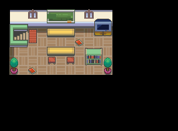

复习宝可梦知识
一句话目标：在桔梗市的训练家学校陪学生做三题异常状态判断题。
（旧任务名：迈向训练师的第一步）
接取地点
- 桔梗市的训练家学校：学生出现在两处入口，均为同一任务的对话对象、按对白身份区分并列：
- 地图 46:7 内 (8,7)。
- 地图 46:9 内 (16,11)。
- 46:7 与 46:9 之间有传送口相连，同属桔梗市的室内学校区域。
准备条件
- 已加入游击士协会（剧情旗标 4246 成立）。
操作步骤
- 到桔梗市训练家学校与学生对话，他说为了考试想复习异常状态知识，请你陪他一起复习。
- 选择答应，进入三题判断题（每题选"是/否"）： - 第1题："异常状态不可共存，共有中毒、睡眠、灼伤、冰冻、麻痹五种。"——本作脚本判定为否（理由：还有剧毒）。 - 第2题："麻痹会让速度下降、每回合有几率无法动弹，但电系宝可梦不会陷入麻痹。"——脚本判定为是。 - 第3题："灼伤会让物攻减半，且每回合结束时损失一定量HP。"——脚本判定为否（脚本理由：灼伤只是让物理招式伤害减半）。
- 三题答完后他说都记住了，并送给你报酬；BP数量随答对题数增加。
- 任务完成（完成旗标 5492）。
交付检查
- 三题必须答完；每答对一题计1点，最终BracerPoints在3-6点之间（3+答对题数）。
- 完成后学生只会说"携带树果可自动回复"之类的自修对白。
奖励
- 博识眼镜×1。
- BracerPoints：3 + 答对题数（最少3，最多6）。
容易卡住的位置
- 答案按脚本的点数分支为准：否 / 是 / 否（第2题选"是"、第1、3题选"否"才计分）。
- 学生有两处入口，两处对白与流程相同，任一处均可。
- 完成旗标与接取旗标相同，是一次性任务。
来源与待补字段
- 来源包：
data/quest_packets/025.json；地图页：g46_n007、g46_n009。 - 答案"是/否"的映射以脚本对 0x800D==1 判定为"是"推得，见 JSON
open_questions。
地点地图
共享RGB底图；点击可缩放定位。数字对应本页相关地点，不代表地图上全部事件。
桔梗市

1 复习宝可梦知识（8,7） 底图有22个图块缺少原始数据。
桔梗市

1 复习宝可梦知识（16,11） 底图有18个图块缺少原始数据。